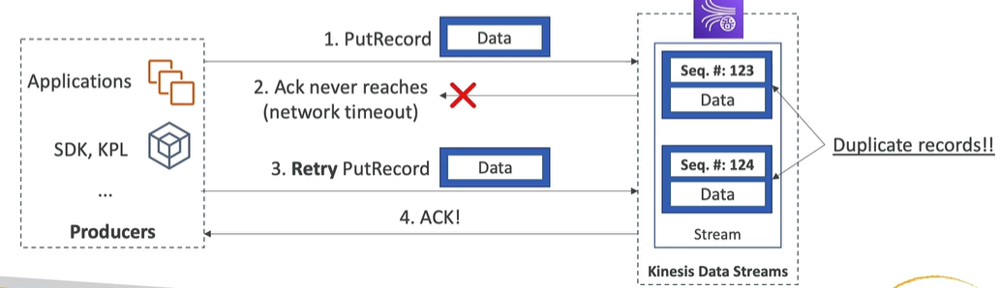

Handling duplicates
Contents
Handling duplicates#
Producer side#
duplicates can occur due to network timeouts of producer
producer tries to put record
kinesis saves records in shard, but response to the producer is not received by producer
producer can’t be sure record is saved, so retries put record
kinesis saves record in shard and confirm to the producer, response is received by producer
producer think record is saved once, in reality record is stored in shard twice
what’s more, both records contains equal data, but are stored as a separate record with other sequential number

To fix it:
include unique record id on producer side to be able to deduplicate it on consumer side
doesn’t mean record won’t be stored twice in stream - it will be stored twice but can be deduplicated on this key
Consumer side#
duplicates can occur due to:
worker (part of consumer KCL application) terminates unexpectedly
worker instances are added or removed
shards are merged or split
the application is deployed
To fix it (quite difficult):
make your consumer application idempotent
handle duplicates in your final destination (so in other words allow for duplicates, i.e. if data are stored finally in database, use UPSERT instead of INSERT)